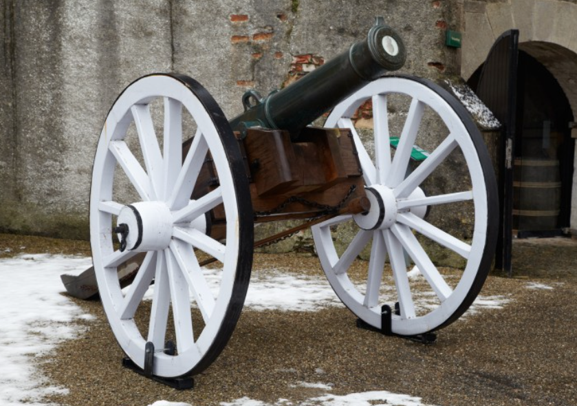
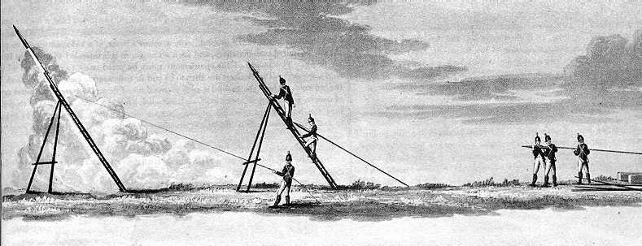
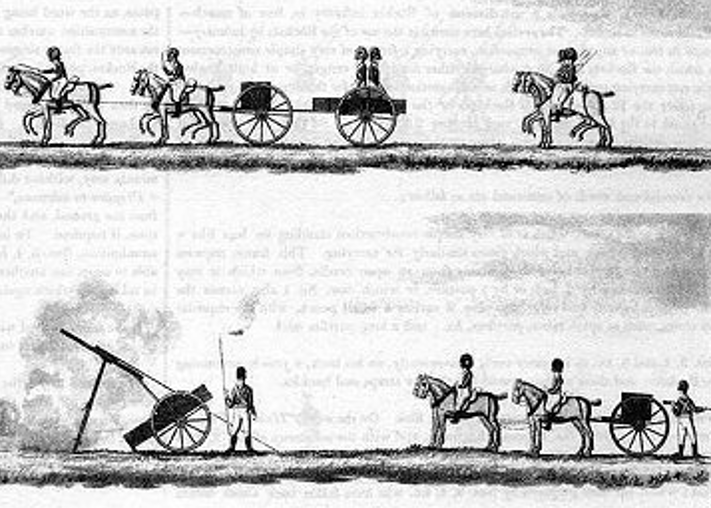
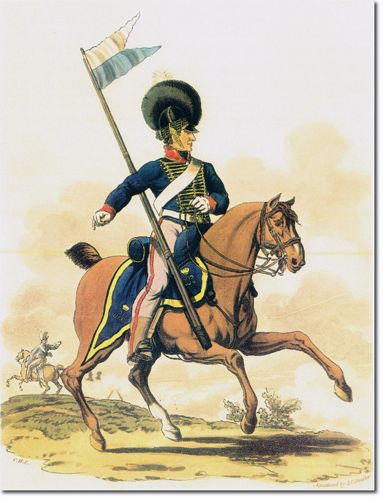
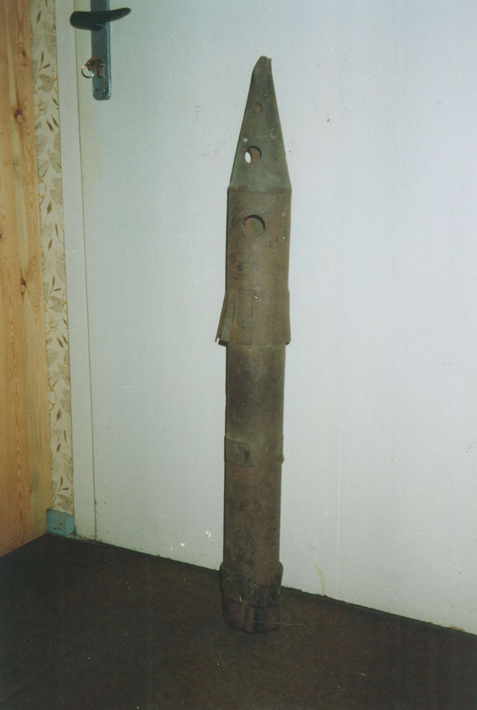
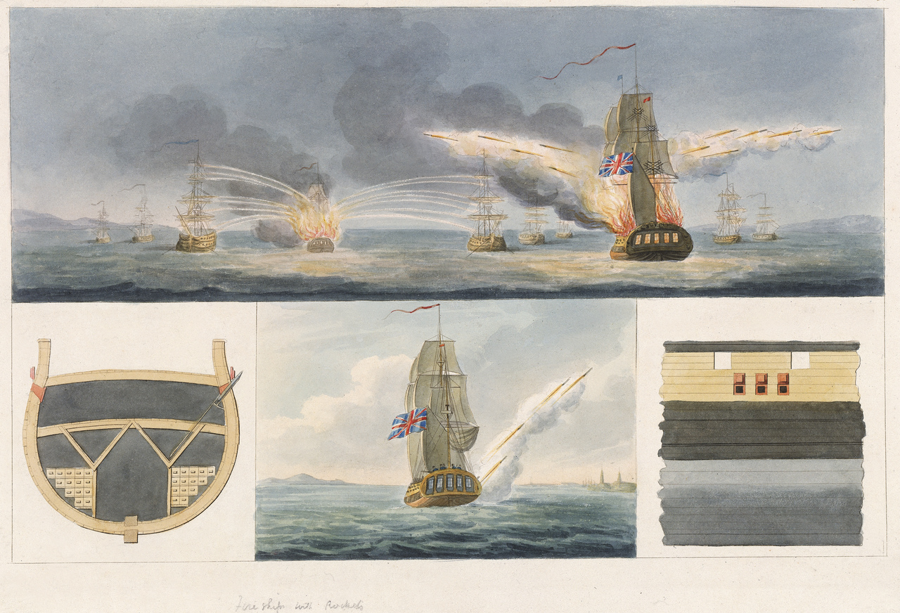
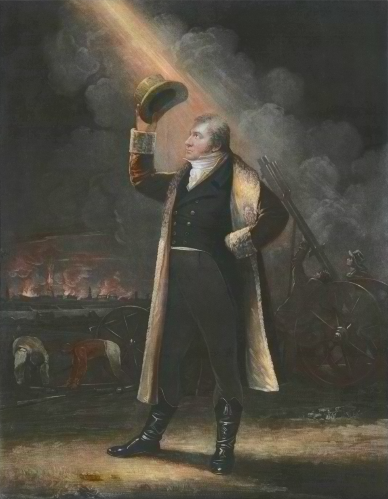
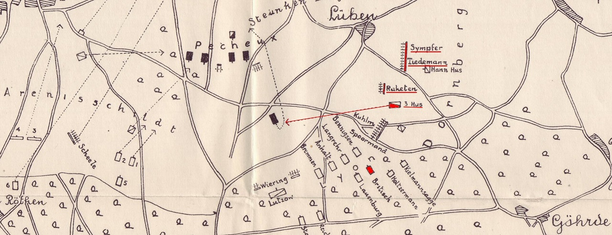

콘그리브 로켓 (2) - 물리보다는 심리
게시: 2026-01-19T06:30:30+09:00
이렇게 비교적 쉽게 만들어진 신병기 콘그리브 로켓에게는 기존 대포 대비 여러가지 장점이 있었습니다. 가장 큰 장점은 바로 가볍다는 점이었습니다. 영국 포병대의 기본 단위인 '포대'(battery)는 6문의 대포로 구성되었습니다. 그 6문의 대포를 운용하기 위해 5명의 장교와 8명의 부사관, 그리고 약 130명의 병사들이 필요했습니다. 너무 많은 인원이 필요한 것 같은데, 그 이유는 대포 6문뿐만 아니라 9량의 탄약차, 기타 짐마차와 이동형 대장간 마차를 끌고 다녀야 했기 때문이고, 따라서 엄청난 수의 말이 필요했기 때문입니다. 각각의 대포는 8마리의 말이 끌었고, 탄약차나 짐마차도 4~6마리의 말이 끌어야 했습니다. 그러니까 1개 포대에는 보통 100마리, 기마 포병대(horse artillery)에는 사람까지도 태워야 했으므로 150마리 정도의 말이 필요했습니다. 당시 대포의 발사 속도는 보통 분당 1발, 작은 6파운드 포의 경우 간혹 분당 2발까지도 가능한 정도였습니다. 따라서 이렇게 엄청난 말과 사람을 동원해서 퍼부을 수 있는 화력은 9파운드짜리 포탄을 분당 6발 정도의 속도로 쏘는 정도였습니다. 당시 포탄은 대개 쇳덩어리 대포알, 즉 roundshot을 쏘았으므로, 이런 포탄이 밀집 보병대에 제대로 명중한다고 해도 한 방에 3~4명이 쓰러지는 정도였고, 아무것도 맞추지 못 하고 진흙 한 무더기만 튀기는 경우도 많았습니다. 이런 비효율은 당시 대포들의 무게 때문이었습니다. 대포는 작용 반작용의 원리로 대포알을 쏘는 것이었으므로, 무거운 포탄을 멀리까지 쏘려면 대포가 무거워야 했습니다. 당시 영국 포병대가 주력으로 사용하던 9파운드 포의 경우 포신 무게만 약 690kg, 포가와 바퀴 등을 합하면 총 중량은 약 1,500kg에 달했습니다. 이렇게 무거운 포를 동원해서 쏘는 포탄의 무게는 글자 그대로 9파운드, 즉 약 4kg 정도였고요.

(영국 포병대의 주력 화기인 9파운드 포입니다. 원래 영국 포병대는 6파운드 포를 주력으로 사용했으나, 프랑스군의 8파운드 포 대비 화력이 너무 떨어진다는 지적이 반복되자 9파운드 포를 새로 만들어서 사용했습니다.) 그런데 콘그리브 로켓은 발사체 자체에서 연소를 일으키는 구조이다보니, 무거운 대포가 필요하지 않았습니다. 기본적으로 원통형 관을 반으로 잘라놓은 것 같은 간단한 강철제 홈에 A자형 버팀목을 대서 경사판을 만든 것이 발사대였습니다. 그리고 여의치 않으면 그런 발사대도 필요없이 그냥 둔덕이나 참호 등 로켓을 비스듬히 기대어 놓을 수만 있으면 어디서든 발사가 가능했습니다. 비교적 대형 로켓인 32파운드 로켓의 탄두에는 10인치짜리 폭발탄(bomb)과 동일한 7파운드(액 3.2kg)의 장약을 실을 수 있었는데, 발사를 위해서는 톤 단위의 대포가 필요했던 폭발탄과는 달리 32파운드 로켓은 그냥 약 14.5kg의 로켓 본체와 5.1m 길이에 무게 약 8kg 정도의 장대(guidestick)만 있으면 발사가 가능했습니다. 그러니까, 말 한 마리가 갈 수 있는 곳이면 어디서든 로켓 발사가 가능했습니다.

(로켓 발사 장면입니다.)

(로켓 부대의 모습입니다. 단촐하게 로켓탄이 실린 마차를 끌고 다니다가 필요한 곳에 발사대를 설치하고 로켓을 얹은 뒤 쏘기만 하면 됩니다.)

(로켓 부대원의 모습입니다.) 로켓의 장점은 가볍다는 점과 그에 따른 기동성에 그치지 않았습니다. 사거리도 대포보다 훨씬 길었습니다. 최대 사거리가 1.5km에 불과한 9파운드 포와는 달리, 32파운드 로켓은 무려 2.7km까지도 날아갈 수 있었습니다. 발사 속도가 대포보다 훨씬 빠른 것은 말할 나위가 없었습니다. 또한 당시 포탄에도 라운드샷 뿐만 아니라 폭발탄, 소이탄 등이 있었던 것처럼, 로켓에도 라운드샷은 물론 폭발탄과 소이탄 등 다양한 탄두를 부착할 수 있었습니다. 탄두에 연결된 도화선 길이를 잘 조절하면, 로켓 탄두가 적의 밀집 대오 머리 위에서 폭발하도록 할 수도 있었습니다.

(32파운드 로켓입니다. 탄두 부분에 커다란 공기 구멍이 뚫린 것으로 보아, 저건 속에 인화 물질을 넣고 불 붙은 형태로 발사하는 소이탄으로 사용된 것입니다. 미국 국가에 나오는 "the rockets' red glare" (로켓의 붉은 섬광)이라는 표현은 1814년 영미 전쟁 때 맥헨리 요새(Fort McHenry)에 박격포함(bomb ketch)인 HMS Erebus에서 발사한 저 32파운드 로켓을 묘사한 것입니다.)

(로켓을 발사하는 HMS Erebus의 모습입니다.) 추진제 안정성도 좋았습니다. 대포의 장약은 보통 화약 가루 형태로 보관되다가 전투 전에 캔버스 천으로 만든 포대에 채워넣는 형태로 준비되다 보니, 외부의 습기에 노출되는 일이 잦았습니다. 따라서 발사할 때 약실에서 폭발이 제대로 일어나지 않아 의도한 것보다 짧은 사거리가 나오는 경우가 종종 있었습니다. 그에 비해, 로켓은 특성상 밀폐된 강철 원통에 고체 형태의 장약을 다져넣은 것이다보니, 외부의 습기에 노출될 일이 없어서 안정성이 좋았습니다. 나폴레옹 전쟁 당시 제조된 로켓들은 전쟁이 끝나고 10여 년이 지난 뒤에 먼지가 끼고 녹이 슨 상태로 꺼내어 쏘아보니 어제 만든 것처럼 잘 발사되더라는 기록이 있을 정도였습니다. 그 외에도 로켓에는 대포 대비 가장 큰 장점이 따로 있었습니다만, 그 점은 아래에서 다시 이야기하도록 하겠습니다. 다만 로켓에는 장점만 있는 것은 아니었습니다. 무엇보다 가장 심각한 단점이 있었는데, 바로 정확성이었습니다. 당시 대포의 명중률이 뛰어난 편은 아니었지만, 그래도 몇 백 미터 밖의 적의 밀집 보병대오를 향해 발사하면 확실하게 한두 명의 적군은 죽일 수 있었습니다. 하지만 로켓은 멀리 날아가기는 했지만, 원하는 거리만큼 날아가는 것도 아니었고, 가장 나쁜 것은 원하는 방향으로 날아가지 않더라는 점이었습니다. 그런 부정확성을 교정하려고 긴 장대를 일종의 무게 추처럼 달아놓기는 했으나, 그 효율이 아주 좋지는 않았습니다. 게다가, 긴 장대를 매달아 놓으니 당연히 바람이 거세게 불 경우 그 영향을 크게 받을 수 밖에 없었습니다. 그러니까 불과 몇 백 미터 밖의 밀집 보병대오를 향해 발사해도, 로켓은 전혀 엉뚱하게 좌측 혹은 우측으로 크게 빗나가기도 했고, 적 보병대오의 머리를 훌쩍 넘어 적의 뒤편에 떨어지기도 했습니다. 역풍이 불 경우, 공중에서 기우뚱 하더니 발사한 아군을 향해 날아오더라는 증언도 두어 건 있을 정도였습니다. 바로 그런 점 때문에, 이베리아 반도에서 아직 실험 중이던 로켓의 활약상을 지켜본 웰링턴 공작은 로켓이라면 아주 학을 뗄 정도로 싫어했습니다. 훗날의 일이긴 합니다만, 1815년 워털루 전투에도 이 로켓 여단이 참전했는데, 웰링턴 공작은 그 로켓 여단에게 '로켓은 절대 가지고 오지 말고 대신 6파운드 포를 가지고 오라'고 명령할 정도였습니다. 다만 웰링턴도 로켓 부대에게 그건 너무 무례한 명령이었다고 생각했는지 '대포와 함께 12파운드 로켓탄 800발을 휴대해도 좋다'라고 명령을 바꾸었다고 합니다.

(콘그리브 로켓을 만든 윌리엄 콘그리브의 초상화입니다. 콘그리브는 이 초상화를 발주할 때 저렇게 1807년 코펜하겐 폭격에 자신의 로켓이 사용되는 장면을 배경으로 넣어달라고 한 것으로 보아, 코펜하겐 폭격을 무척 자랑스럽게 생각한 모양입니다. 저때 무려 2만5천 발의 로켓이 발사되어 수백 채의 건물에 화재를 일으켰습니다. 이 폭격 사건은 '이대로 놔두면 프랑스가 덴마크의 함대를 접수하게 된다'라며 덴마크에게 모든 군함을 영국에게 넘기라며 영국이 일방적으로 덴마크를 침공하면서 발생했습니다. 왠지 요즘의 국제 정세와 크게 다른 것 같지 않습니다. 이 사건은 민간 거주지에 대한 유럽 역사 최초의 의도적 포격으로 기록됩니다.) 여러가지 실험을 거치고 1807년 코펜하겐 폭격 때도 사용되는 등 실전 사례를 만든 뒤, 마침내 영국 육군에 정규 로켓 부대가 편성된 것은 1813년 중반이었습니다. 이들의 정식 명칭은 로열 기마 포병대(Royal Horse Artillery, RHA) 소속 O 포대(O Battery)였으나, 사람들은 이를 로켓 여단(Rocket Brigade)라고 불렀습니다. 여단이라고 부른 것은 인원수가 여단급이어서가 아니라, 영국 포병대에서 1개 포대를 원래 여단이라고 부르다가 나중에 포대(battery)로 바꿔 불렀기 때문이었습니다. 실제 인원수는 142명에 말 100마리였는데, 그 중에서도 실제 발사를 담당한 포수는 30여 명이었고, 나머지는 대부분 로켓의 수송과 그를 위한 말 관리병이었습니다. 이들을 편성한 이유는 딱 하나, 이제 곧 벌어질 연합군과 나폴레옹과의 결전에 영국의 유일한 지상군으로 파견하기 위해서였습니다. 그러니까 일종의 영국 육군 대표단 같은 것이었지요. 이들이 최초로 실전에 참전한 것은 1813년 9월 16일 함부르크 남동쪽에서 벌어진 괴르더(Göhrde) 전투였습니다. 함부르크에서 출격한 약 3천의 프랑스군을 약 1만2천의 연합군이 요격한 이 전투는 당연히 연합군의 승리로 돌아갔습니다. 전체 부대 중 절반이 참전했던 로켓 여단의 활약은 어땠을까요? 다소 실망스러웠습니다. 최초 일제 사격을 너무 먼 거리에서 실시했는데, 아니나 다를까 모두 엉뚱한 방향과 거리로 날아가버려 프랑스군에게는 아무런 타격을 주지 못했던 것입니다. 그에 따라 두 번째 일제 사격은 충분히 가까운 거리까지 접근하여 실시했고, 그 사격은 이미 후퇴 중이던 프랑스군에게 큰 공포와 혼란을 안겨주긴 했으나, 그때는 프랑스군이 이미 후퇴 중이었으므로 큰 생색을 내기는 어려웠습니다.

(영국 로열 로켓 여단이 최초로 참전했던 실전인 괴르더(Göhrde) 전투 상황도입니다. 이 상황도 중앙 부분을 보면 빨간 선이 그어져 있는데 그건 제3경기병(3 Hus) 연대의 돌격 경로를 뜻합니다. 그 제3경기병 연대의 바로 위에 Raketen(영어로는 rockets)라고 표시된 것이 보이는데, 그게 바로 영국 로열 로켓 여단입니다.) 이 절반의 성공은 1813년 10월 18일 라이프치히 세 번쨰 날 전투에 참전하는 로켓 여단 지휘관 보그(Richard Bogue) 대위에게도 잘 전달되었고, 그는 이때 배운 점을 잘 활용하기로 했습니다. 위에서 언급하지 않았는데, 대포에 비해 로켓이 가지는 가장 큰 장점은 바로 충격과 공포였습니다. 발사된 대포알은 눈에 보이지 않습니다. 그래서 포격을 받는 밀집 보병대오 입장에서는 마치 보이지 않는 거대한 낫이 병사들 몇 명을 휙 낚아채서 쓰러뜨리는 것처럼 보였지요. 어떻게 생각하면 그렇게 보이지 않는 것이 더 공포스럽게 느껴질 수도 있습니다. 그에 비해 로켓은 대포알에 비하면 느린 속도로 날기 때문에 눈에 잘 보였습니다. 뿐만 아니라 시커면 연기와 붉은 불꽃을 꼬리에 달고 날아들었으며, 더 나쁜 점은 엄청난 소음을 내며 날아들었다는 것이었습니다. 뿐만 아니라 일직선으로 날아드는 대포알에 비해, 로켓은 흔들흔들거리다가 간혹 엉뚱한 방향으로 휙 머리를 돌리기도 했습니다. 그 결과, 로켓은 적 병사를 물리적으로 때려서 입히는 피해보다 그 모습과 소음, 연기로 일으키는 심리 효과가 더 컸습니다. 물론 로켓에 직격당하면 살아남기 어려웠고, 또 탄두에 도화선을 붙인 폭발탄을 탑재한 로켓은 병사들 머리 위에서 폭발하여 여러 병사들에게 부상을 입히기도 했습니다. 하지만 역시 로켓의 효과는 심리적인 것이었습니다. 병사들 뿐만 아니라 말도 훈련과 전투를 거듭하면서 총소리와 대포 소리에 익숙해집니다. 그러나 요란한 불꽃과 소음을 내며 날아드는 로켓은 고참 병사들은 물론 특히 말에게 엄청난 공포와 혼란을 안겨주었습니다. 로켓의 이런 심리전 효과는 1813년 라이프치히 전투에서 불과 140명짜리 포대 하나만 파병한 영국군에게 빛나는 영광을 안겨주게 됩니다. 자세한 이야기는 다음 주에 보시겠습니다. Source : The Life of Napoleon Bonaparte, by William Milligan Sloane Napoleon and the Struggle for Germany, by Leggiere, Michael V With Napoleon's Guns by Colonel Jean-Nicolas-Auguste Noël https://www.britannica.com/event/Napoleonic-Wars/Dispositions-for-the-autumn-campaign http://www.historyofwar.org/articles/campaign_leipzig.html https://warhistory.org/@msw/article/leipzig-battle-of-the-nations https://www.encyclopedia.com/history/encyclopedias-almanacs-transcripts-and-maps/leipzig-battle-0 https://warfarehistorynetwork.com/article/death-knell-for-napoleons-empire/ https://en.wikipedia.org/wiki/Congreve_rocket https://en.wikipedia.org/wiki/Sir_William_Congreve,_2nd_Baronet https://www.usni.org/magazines/proceedings/1968/march/congreve-war-rockets-1800-1825 https://www.spacecentre.co.uk/collections/categories/rockets/congreve-rocket-cross-section/ https://www.theobservationpost.com/blog/?p=618 http://napoleonistyka.atspace.com/British_artillery.htm https://ageofrevolution.org/200-object/british-cannon-9-pounder/ https://www.britishempire.co.uk/forces/rhamountedrocket.htm https://en.wikipedia.org/wiki/Battle_of_the_G%C3%B6hrde https://en.wikipedia.org/wiki/HMS_Erebus_(1807) https://en.wikipedia.org/wiki/Richard_Bogue https://launiusr.wordpress.com/2014/11/10/a-brief-origins-of-rocketry-in-less-than-1000-words/